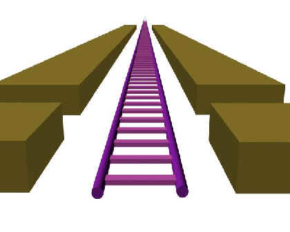

A continuació es descriuen les principals indicacions de profunditat monoculars:
La il·luminació de cada punt d'una superfície depèn en gran part de la orientació de la superfície en aquest punt. Aquest fet és utilitzat pel sistema visual per obtenir informació addicional sobre la forma i la rugositat d'un objecte a partir de les variacions de color al llarg de la seva superfície.
La figura següent n'és un exemple. Des del punt de vista triat, el cub i el cilindre tenen un perfil molt similar però, gràcies a la il·luminació, podem reconèixer fàcilment la forma del cub i la del cilindre:
Compareu la figura anterior amb la següent on, a més de triar un punt de vista lleugerament diferent, s'han anul·lat els efectes de la il·luminació:
Les ombres projectades per la interposició d'un objecte entre un focus de llum i d'altres objectes són una evidència que l'objecte interposat és més proper a l'observador que els objectes sobre els que es projecta la seva ombra. A més a més, la posició i distància de l'ombra respecte l'objecte que la projecta són utilitzades pel sistema visual humà per inferir la distància entre l'objecte que projecta l'ombra i els objectes que la reben.
A la següent figura, l'ombra projectada per les dues esferes sobre el pla ens permet deduir de forma aproximada la distància de cada esfera al pla i, conseqüentment, ens permet ubicar les dues esferes espacialment:
Compareu la figura anterior amb la figura següent, on no s'han dibuixat les ombres. Ara resulta pràcticament impossible ubicar correctament les dues esferes respecte al pla (tret que coneguem la seva mida):
Quan un observador mira un objecte determinat, l'àrea de la projecció de l'objecte en la retina de l'observador depèn de la mida real de l'objecte i de la distància a l'observador. Per l'experiència, coneixem la mida dels objectes que ens resulten familiars (persones, animals, vehicles...). D'aquesta forma, és possible estimar la profunditat d'un objecte a partir de la porció d'imatge que ocupa a la retina.
El fet que un objecte tapi parcialment un altre objecte és una evidència que el primer objecte està més pròxim a l'observador que el segon. Sembla ser que l'oclusió és una de les indicacions de profunditat més prioritàries, per la qual cosa en cas de conflicte preval davant la resta.
A la següent figura, la interposició entre les motocicletes ens permet ordenar-les de la més llunyana a la més propera:
Imagineu una superfície extensa en la que es repeteix una textura o patró determinat, per exemple, una via de tren. A mesura que s'allunya la via, els segments es fan més petits i apareixen més junts, augmentant la freqüència amb la que apareixen. Aquest increment de freqüència permet al sistema visual inferir la variació de la profunditat.
Aquesta indicació de profunditat és especialment evident a la següent fotografia:
L'atmosfera actua absorbint part de la llum que s'hi propaga, per la qual cosa els objectes més llunyans apareixen amb colors menys vius, menys nítids i menys saturats. Per aquesta raó els objectes amb colors vius es perceben com més propers que els objectes amb colors més apagats.
En aquesta fotografia, es poden distingir diferents tonalitats de verd. El sistema visual tendeix a indicar-nos que la vegetació de color més viu està més propera que la vegetació més apagada.
La retina de l'ull humà rep una projecció en perspectiva del món real. Aquesta projecció deforma l'espai de manera que els objectes més llunyans queden més petits en relació als més propers. Les línies que al món real són paral·leles, quan es projecten a la retina tendeixen a convergir, i la velocitat d'aquesta convergència ens permet deduir la variació de la profunditat.

Aquesta indicació de profunditat, a diferència de les anteriors, és l'única que requereix no una imatge estàtica sinó una sèrie d'imatges corresponent a un període de temps en el qual l'observador es mou en relació a d'altres elements de l'entorn. Quan el punt de vista és dinàmic, la velocitat relativa dels objectes (mesurada sobre la retina) depèn de la distància a l'observador. L'exemple més familiar és un observador mirant per la finestreta d'un tren en moviment. Respecte a aquest observador, els postes d'electricitat es mouen amb major rapidesa que les muntanyes més llunyanes, fet que és aprofitat pel cervell per estimar la profunditat d'aquests objectes.